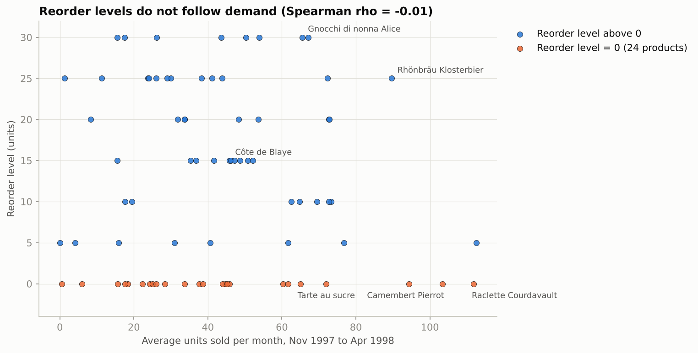
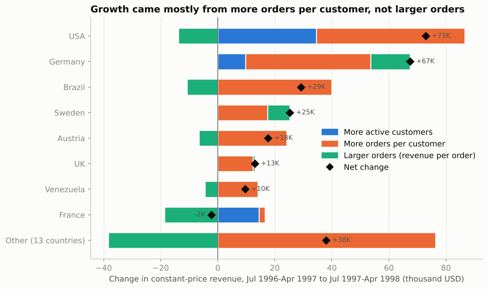
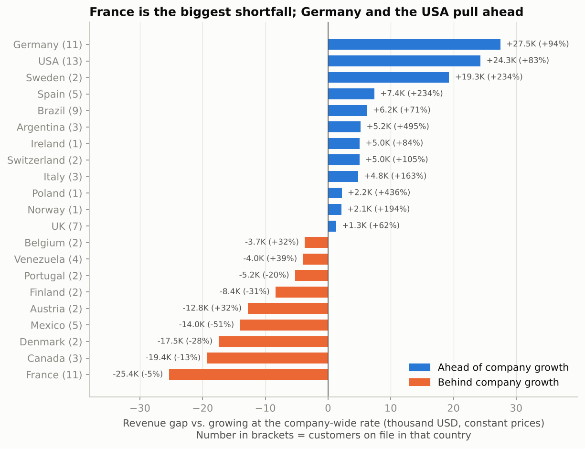
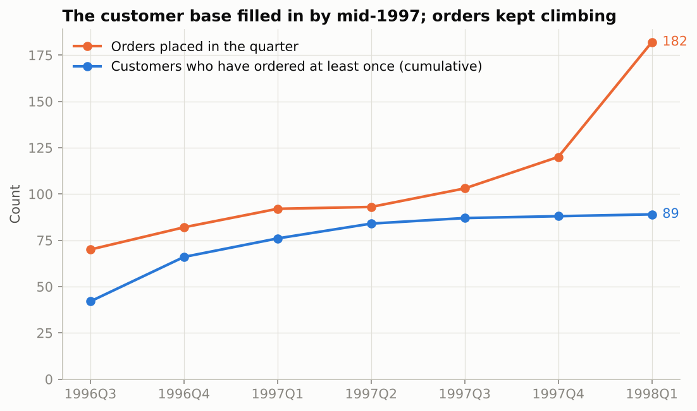
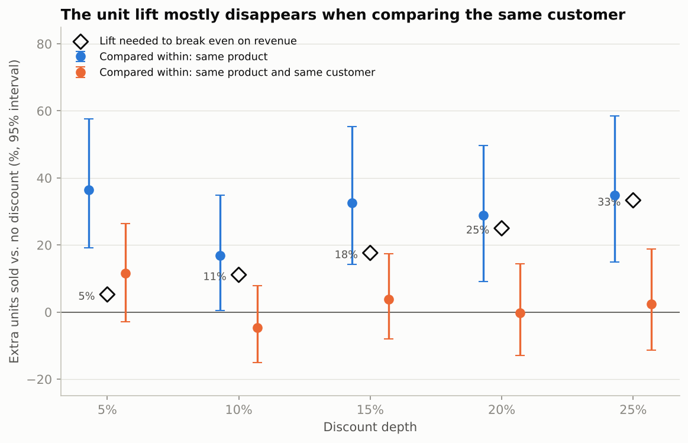
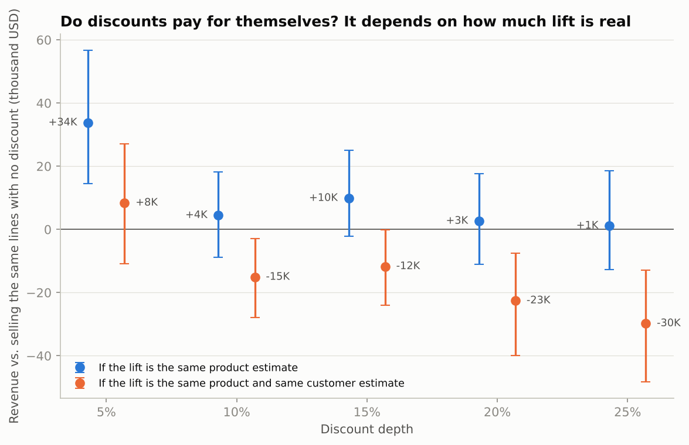
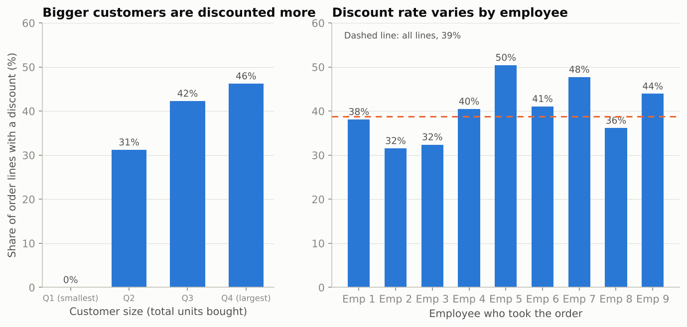

Northwind: three questions about stock, growth and discounts
The Northwind database covers 830 orders (2,155 order lines) from July 1996 to early May 1998, with 91 customers, 77 products and 29 suppliers. I picked three questions where the data can support an answer, and I state where it cannot. Every number and chart here is produced by the Python code in the GitHub repository.
Data notes that apply throughout
- Price increase. Prices rose a uniform 25% on 7 April 1997. To keep that from looking like growth, "constant-price revenue" values every line at the current list price: list price × quantity × (1 − discount).
- Partial final month. Data ends on 6 May 1998, so May 1998 is excluded and all windows end in April 1998.
- No cost data. Everything is revenue, not profit.
Do reorder levels and stock positions reflect demand, and which high-revenue products are least protected?
Why it matters
A stock-out on a product that sells well costs revenue immediately, while a reorder level that ignores demand means the replenishment rule is not doing its job. Revenue is concentrated, so a few products carry most of the risk.
Approach
Demand is each product's average monthly units over the last six full months (Nov 1997 to Apr 1998). Days of cover is units in stock divided by demand, scaled to days. I compare reorder levels to demand with a Spearman rank correlation, measure how revenue concentrates across products and suppliers, and repeat the cover calculation with 3-month and all-time demand windows to check the result does not depend on the window.


| Measure (last 6 full months) | Value |
|---|---|
| Spearman correlation, demand vs. reorder level | −0.01 |
| Products with reorder level 0 | 24 of 77 (41.8% of revenue) |
| Median days of cover | 19.7 |
| Products with under 30 days of cover | 45 of 77 |
| Share of revenue in products under 30 days of cover | 80.3% |
| Products making up 50% / 80% of revenue | 11 / 34 |
| Suppliers making up 50% / 80% of revenue | 6 / 14 |
| Discontinued products still selling | 8 (13.7% of revenue) |
Main finding
Reorder levels are unrelated to demand (Spearman ρ = −0.01). 24 products have a reorder level of zero, and together they carry 41.8% of recent revenue. 13 of the 15 highest-revenue products have under 30 days of stock, and 80% of recent revenue sits in products with under 30 days of cover. Only one product is below its reorder level with nothing on order, so the problem is the rule, not missed execution of it.
Business implication
Reset reorder levels from demand (for example, a target number of days of cover with a supplier lead-time buffer), starting with the 11 products that make up half of revenue. Review the 8 discontinued products separately, since they still account for 13.7% of recent revenue.
Limits. The stock figures are a single undated snapshot, so cover is measured against past demand, not a forecast. There is no lead-time data, so "under 30 days" is a screening threshold, not proof of a stock-out. 76 of the 77 products sold in the window. The count of products flagged as under 30 days among active products is 38, 36 and 34 under the 6-month, 3-month and all-time windows, and 30 are flagged in all three.
Is market growth coming from more customers, more orders per customer, or larger orders, and where should sales focus?
Why it matters
Each source of growth calls for a different plan: acquiring customers, getting existing customers to order more often, or growing order size. Knowing which markets are ahead of or behind the company average shows where sales effort is most likely to pay off.
Approach
I compare two ten-month windows, Jul 1996 to Apr 1997 and Jul 1997 to Apr 1998, using constant-price revenue. Revenue is split exactly as customers × orders per customer × revenue per order, and the dollar change is attributed to each factor with a logarithmic-mean weighting. Markets are assigned by the customer's country. For each market I measure the "gap vs. company growth": its actual revenue in the later window minus what it would have earned had it grown at the company rate. A like-for-like check follows only the 42 customers who were already ordering in the earlier window.



| Constant-price | Jul 96–Apr 97 | Jul 97–Apr 98 | Change |
|---|---|---|---|
| Revenue | $487,316 | $757,909 | +55.5% |
| Orders | 275 | 479 | +74.2% |
| Active customers | 80 | 87 | +8.8% |
| Orders per customer | 3.44 | 5.51 | +60.2% |
| Revenue per order | $1,772 | $1,582 | −10.7% |
Main finding
Of the +$270.6K of growth, about +$288.6K came from customers ordering more often, +$51.4K from having more customers, and −$69.4K from smaller orders. Growth was not mainly new customers: 84 of the 89 customers who ever ordered had already ordered by the end of mid-1997. Even among the 42 customers present in both windows, orders per customer rose 53% and revenue per order fell 8%. That like-for-like group delivered 44.5% of the growth, and customers who first ordered after Q3 1996 delivered the other 55.5%.
By market, Germany (+$27.5K) and the USA (+$24.3K) grew the most ahead of the company rate. France is the largest shortfall (−$25.4K, revenue down 5% while the company grew 56%). Canada (−$19.4K), Denmark (−$17.5K), Mexico (−$14.0K) and Austria (−$12.8K) also lagged. Seven of 21 countries have five or more customers, so most country-level gaps rest on small samples. Austria is 89% a single customer (ERNSH), and the top 10 customers account for 44.5% of window-two revenue.
Business implication
Growth came from order frequency, so the priority is protecting that behavior, especially among the largest accounts, rather than assuming new-customer acquisition will keep the pace. Smaller orders are a drag worth watching. France is the clearest market to investigate: it is a sizeable market whose revenue fell 5% while the company grew 56%.
Limits. Country is the customer's country. Using ship-to country instead moves only about $6.2K across both windows and flips no market's gap sign. Small markets (two customers in Austria or Sweden) are shown for completeness, not as reliable trends.
Do discounts lift sales enough to justify the revenue given up?
Why it matters
Discounts cost revenue on every unit that would have sold anyway. They only pay off if they bring in enough extra units to cover it, and a discount of d% needs a lift of d/(1−d), for example 33% extra units for a 25% discount.
Approach
38.9% of the 2,155 order lines carry a discount (5%, 10%, 15%, 20% or 25%), giving up $88.7K, or 6.5% of $1.35M gross revenue at listed prices. I regress log quantity on discount-tier indicators, always holding the product fixed, and then add customer fixed effects so the comparison is a customer against itself. Intervals come from an order-level bootstrap (1,000 resamples). Order 11077 has off-tier discounts and is left out of the tier models. This is an association: Northwind did not randomize discounts, and there is no cost data.



| Discount | Same product: lift (95% CI) | Same product + customer: lift (95% CI) | Break-even |
|---|---|---|---|
| 5% | +36.5% (19.2, 57.6) | +11.6% (−2.9, 26.4) | 5.3% |
| 10% | +16.8% (0.4, 34.9) | −4.6% (−15.0, 7.9) | 11.1% |
| 15% | +32.6% (14.2, 55.4) | +3.7% (−7.9, 17.5) | 17.6% |
| 20% | +28.8% (9.1, 49.8) | −0.3% (−12.9, 14.4) | 25.0% |
| 25% | +34.9% (14.9, 58.5) | +2.5% (−11.4, 18.8) | 33.3% |
Main finding
Discounted lines sell more units (27.5 vs. 21.9 on average, Kruskal-Wallis p ≈ 2×10⁻⁹), and within the same product the estimated lift is about 30% at every tier. Deeper discounts do not lift more: the 25% tier is not distinguishable from the 5% tier. But the lift largely vanishes when I compare a customer with itself, where every tier's interval includes zero. Larger customers are discounted more often (Spearman 0.40 between customer volume and discount share), so much of the raw lift reflects who gets discounts, not what the discount did.
Counting all of the across-customer lift as caused by discounts, discounts would net about +$52K (95% CI +$14K to +$96K), mostly from the 5% tier. Under the same-customer estimate the net is about −$71K (−$117K to −$29K), with the 10% to 25% tiers each losing money. Four of five tiers have a confidence interval that dips below their break-even lift even under the optimistic estimate.
Business implication
The evidence does not support deep discounts as a volume driver: depth does not buy more units, and a 25% discount needs a 33% lift to break even. If discounts continue, shallow ones targeted at accounts where they can be tested are the defensible choice. Better still, run a controlled test (discount a random subset of comparable accounts) to separate customer effects from discount effects. Discount frequency also varies across employees (31.5% to 50.4% of lines), which suggests discounts are not following a consistent rule.
Limits. Association only; no cost, margin or customer-intent data. The employee comparison treats lines as independent, so its p-value (0.0009) is optimistic. The smallest customer quartile received no discounts at all.